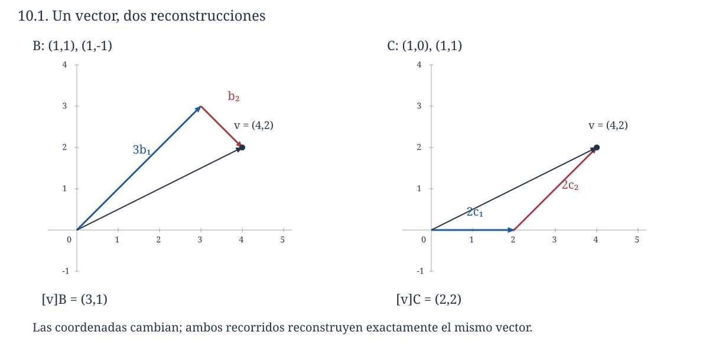
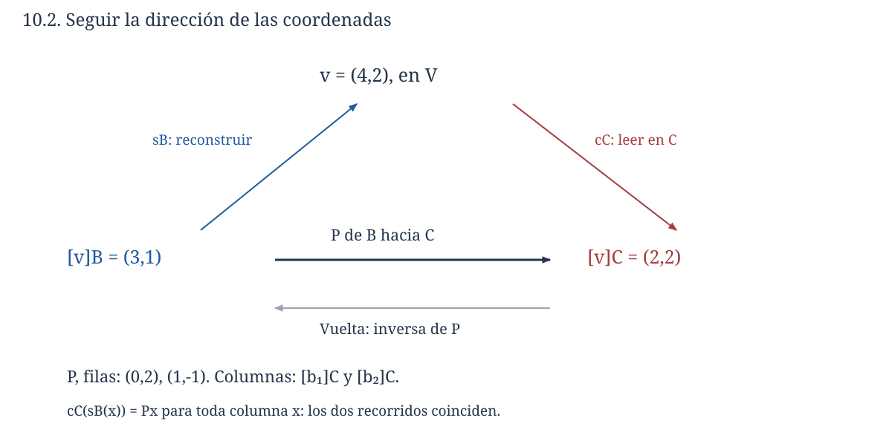
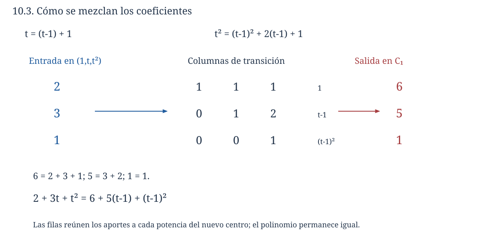

Capítulo 10. Isomorfismos y coordenadas
Álgebra para matemáticos · Tomo II
← Capítulo 9 · Índice del tomo II · Obra completa · Capítulo 11 →
Un desplazamiento del plano puede describirse dando cuánto avanzamos en dirección horizontal y cuánto en dirección vertical. También podemos elegir otras dos direcciones independientes y dar las cantidades que debemos recorrer en ellas. Para llegar a \((4,2)\), por ejemplo, sirven tres pasos en la dirección \((1,1)\) y uno en la dirección \((1,-1)\), porque
\[ (4,2)=3(1,1)+(1,-1). \]
Si elegimos en cambio las direcciones \((1,0)\) y \((1,1)\), llegamos al mismo punto con dos pasos en cada una. Aparecen así tres pares de números: \((4,2)\), \((3,1)\) y \((2,2)\). Cada uno contiene toda la información necesaria para recuperar el desplazamiento, siempre que sepamos qué direcciones se utilizaron y en qué orden.

Esta posibilidad se extiende a los espacios de polinomios o matrices: una base permite sustituir cada objeto por una lista de coeficientes y reconstruirlo sin pérdida. Debemos demostrar que esa sustitución respeta las operaciones, averiguar qué propiedades podemos estudiar mediante ella y aprender a convertir una descripción en otra. En particular, una matriz de cambio de coordenadas sólo queda determinada cuando indicamos qué coordenadas recibe y cuáles entrega.
Todos los espacios que comparemos serán sobre un mismo cuerpo \(\mathbb F\), salvo cuando se examine expresamente un cambio del cuerpo de escalares. Se presuponen las bases de C07, las transformaciones de C08 y los resultados de C09. Las bases de dimensión finita se escribirán como listas ordenadas y las coordenadas como columnas. Para \(n=0\), \(\mathbb F^0\) es el espacio de la única lista vacía y su base es vacía.
10.1. Una correspondencia que conserva las operaciones
En C09, una transformación lineal biyectiva garantizaba que cada salida tuviera exactamente una preimagen. Esa correspondencia permite llevar un cálculo de un espacio a otro: si conocemos las imágenes de dos vectores, conocemos también la imagen de cualquier combinación lineal de ellos. Para recuperar el resultado en el espacio inicial necesitamos que la función inversa conserve igualmente esas combinaciones.
Definición 10.1 (isomorfismo). Un isomorfismo de espacios vectoriales sobre \(\mathbb F\) es una transformación \(T:V\to W\) que es lineal y biyectiva. Si existe tal transformación, decimos que \(V\) y \(W\) son isomorfos y escribimos \(V\cong W\).
La palabra se refiere aquí a la estructura vectorial sobre el cuerpo indicado. Los espacios pueden estar formados por objetos diferentes; la correspondencia debe conservar suma y multiplicación por escalares y permitir volver desde cada objeto de llegada.
Proposición 10.1 (inversa y composición). La inversa de un isomorfismo es lineal. La identidad es un isomorfismo y la composición de dos isomorfismos también lo es. Si \(T:V\to W\) y \(S:W\to Z\) son isomorfismos, entonces \((ST)^{-1}=T^{-1}S^{-1}\).
Demostración. Sean \(y,z\in W\) y \(a,b\in\mathbb F\). La sobreyectividad y la inyectividad de \(T\) proporcionan entradas únicas \(x,u\) tales que \(T(x)=y\) y \(T(u)=z\). Por linealidad,
\[ T(ax+bu)=ay+bz. \]
La entrada que produce \(ay+bz\) es, por tanto, \(ax+bu\); la unicidad de la preimagen da \(T^{-1}(ay+bz)=aT^{-1}(y)+bT^{-1}(z)\). Esto demuestra la linealidad de la inversa sin hipótesis de dimensión.
La identidad conserva las operaciones y es biyectiva. La composición es lineal por C08, inyectiva porque la igualdad de dos salidas permite cancelar primero \(S\) y después \(T\), y sobreyectiva porque una salida en \(Z\) puede levantarse primero a \(W\) y luego a \(V\). Finalmente, aplicar \(T^{-1}S^{-1}\) después de \(ST\), o \(ST\) después de \(T^{-1}S^{-1}\), da las identidades respectivas por asociatividad y las igualdades de inversas. Esto prueba la fórmula. \(\square\)
En particular, ser isomorfos es una relación reflexiva, simétrica y transitiva entre espacios sobre el mismo cuerpo: identidad, inversa y composición justifican cada propiedad. No se sigue que los espacios sean iguales como conjuntos, ni que haya una sola correspondencia entre ellos.
Por ejemplo, la regla \(\Phi(a+bt+ct^2+dt^3)=\begin{pmatrix}a&b\\c&d\end{pmatrix}\) define un isomorfismo \(P_3(\mathbb F)\to M_2(\mathbb F)\). La suma y el producto por un escalar se traducen entrada por entrada, y la regla inversa lee las cuatro entradas como coeficientes. No hemos afirmado que se conserve la multiplicación de polinomios o matrices. De hecho, \(P_3\) ni siquiera es cerrado por multiplicación de polinomios: \(t^3t^3=t^6\) queda fuera. Una estructura adicional requiere condiciones adicionales sobre la correspondencia.
10.2. Codificar y reconstruir un vector
Sea \(\mathcal B=(b_1,\ldots,b_n)\) una base ordenada de \(V\). Por C07, cada \(v\in V\) admite una expresión única
\[ v=x_1b_1+\cdots+x_nb_n. \]
La generación asegura que podemos escribirla; la independencia asegura que no hay dos listas de coeficientes para el mismo vector. Son las dos condiciones que necesitamos para usar esos coeficientes como una descripción completa.
Definición 10.2 (coordenadas). La columna \([v]_{\mathcal B}=(x_1,\ldots,x_n)^{\mathsf T}\) es el vector de coordenadas de \(v\) en la base \(\mathcal B\). Denotamos por \(c_{\mathcal B}:V\to\mathbb F^n\) la función \(c_{\mathcal B}(v)=[v]_{\mathcal B}\) y por \(s_{\mathcal B}:\mathbb F^n\to V\) la función de reconstrucción \(s_{\mathcal B}(x)=\sum_jx_jb_j\).
Teorema 10.2 (isomorfismo de coordenadas). Las funciones \(c_{\mathcal B}\) y \(s_{\mathcal B}\) son isomorfismos inversos. En particular,
\[ [av+bw]_{\mathcal B}=a[v]_{\mathcal B}+b[w]_{\mathcal B} \qquad(a,b\in\mathbb F;\ v,w\in V). \]
Demostración. Si \(v=\sum_jx_jb_j\) y \(w=\sum_jy_jb_j\), los axiomas del espacio vectorial dan \(av+bw=\sum_j(ax_j+by_j)b_j\). Como la expresión en una base es única, la columna de ese vector es precisamente \(ax+by\). Así, \(c_{\mathcal B}\) es lineal.
La reconstrucción seguida de la lectura de coordenadas devuelve \(x\), porque \(s_{\mathcal B}(x)\) está expresado en la base con esos coeficientes. En el otro sentido, leer los coeficientes de un vector y reconstruirlo devuelve el vector inicial. Por tanto, \(c_{\mathcal B}s_{\mathcal B}=I_{\mathbb F^n}\) y \(s_{\mathcal B}c_{\mathcal B}=I_V\). Las funciones son biyectivas e inversas; la proposición 10.1 prueba también la linealidad de \(s_{\mathcal B}\), que puede comprobarse directamente distribuyendo las sumas. Para \(n=0\), la suma vacía reconstruye el único vector cero y las mismas afirmaciones siguen siendo válidas. \(\square\)
Con la base usual de \(\mathbb F^n\), el vector y su columna de coordenadas tienen las mismas entradas. En otros espacios el tipo de objeto cambia: un polinomio pasa a una columna, o una matriz de dos por dos pasa a una columna de cuatro entradas. La notación conserva la base para que podamos regresar al objeto.
En la apertura, con \(\mathcal B=((1,1),(1,-1))\), resolver \(a(1,1)+b(1,-1)=(x,y)\) sobre \(\mathbb R\) da
\[ [(x,y)]_{\mathcal B}=\begin{pmatrix}(x+y)/2\\(x-y)/2\end{pmatrix}. \]
Si \(\mathcal C=((1,0),(1,1))\), la expresión \(u(1,0)+v(1,1)=(u+v,v)\) da \([(x,y)]_{\mathcal C}=(x-y,y)^{\mathsf T}\). Para \((4,2)\) aparecen las columnas \((3,1)^{\mathsf T}\) y \((2,2)^{\mathsf T}\) anunciadas. Las fórmulas son lineales porque los coeficientes se suman y escalan como lo hacen los vectores reconstruidos; la demostración anterior explica por qué ocurrirá con cualquier base.
El orden forma parte de la información. Si intercambiamos los dos vectores de \(\mathcal B\), la columna de \((4,2)\) pasa a \((1,3)^{\mathsf T}\). Una base como conjunto sigue siendo la misma, pero su uso como lista de instrucciones ha cambiado.
10.3. Qué información podemos trasladar
Un isomorfismo permite estudiar relaciones lineales en cualquiera de los dos espacios. La razón no se limita a que conserve una suma: su inyectividad impide que una combinación no nula desaparezca al transportarla.
Proposición 10.3 (transporte de relaciones y subespacios). Si \(T:V\to W\) es un isomorfismo, entonces, para una lista finita \(v_1,\ldots,v_r\) y escalares \(a_j\),
\[ \sum_ja_jv_j=0\quad\Longleftrightarrow\quad\sum_ja_jT(v_j)=0. \]
En consecuencia, \(T\) conserva independencia y envía una base de \(V\) a una base de \(W\). Para subespacios \(U,H\subseteq V\), las imágenes son subespacios y
\[ T(U+H)=T(U)+T(H),\qquad T(U\cap H)=T(U)\cap T(H). \]
Si \(U\) tiene dimensión finita, \(\dim T(U)=\dim U\).
Demostración. La implicación directa de la equivalencia se obtiene aplicando linealidad; para la inversa, la suma de imágenes es \(T(\sum_ja_jv_j)\) y el núcleo trivial obliga a que el vector interior sea cero. Por ello una lista tiene sólo relaciones triviales exactamente cuando su imagen las tiene. Si la lista genera \(V\), su imagen genera \(W\): para \(w\in W\) elegimos una preimagen y expresamos ésta con los generadores. Se transportan, por tanto, las dos condiciones de una base.
Las imágenes de subespacios son subespacios por C09. Cada vector de \(U+H\) tiene la forma \(u+h\), y su imagen \(T(u)+T(h)\) pertenece a la suma de imágenes. Recíprocamente, cualquier suma de esa forma es \(T(u+h)\), lo que prueba la primera igualdad.
Una imagen de un vector en \(U\cap H\) pertenece a ambas imágenes. Para la inclusión contraria, si \(w=T(u)=T(h)\) con \(u\in U\) y \(h\in H\), la inyectividad da \(u=h\), de modo que ese vector pertenece a la intersección. Finalmente, una base finita de \(U\) se transporta a una base de \(T(U)\) por el mismo argumento de relaciones y generación, y conserva su longitud. \(\square\)
En particular, para averiguar si varios polinomios son independientes podemos leer sus coeficientes en una base fija y aplicar eliminación a esas columnas. La condición de usar una misma base es esencial. Las columnas \((1,0)^{\mathsf T}\) de dos vectores, leídas cada una en una base diferente, no permiten compararlos: cada columna sólo dice «el primer vector de mi base».
Teorema 10.4 (clasificación en dimensión finita). Dos espacios vectoriales de dimensión finita sobre un mismo cuerpo son isomorfos si y sólo si tienen la misma dimensión. Todo espacio de dimensión \(n\) es isomorfo a \(\mathbb F^n\).
Demostración. Si existe un isomorfismo, la proposición 10.3 transporta una base del dominio a una base del codominio, con la misma longitud. Las dimensiones coinciden.
Supongamos ahora que \(\dim V=\dim W=n\). Elegimos bases ordenadas \(\mathcal B=(b_1,\ldots,b_n)\) y \(\mathcal D=(d_1,\ldots,d_n)\). La regla
\[ \sum_jx_jb_j\longmapsto\sum_jx_jd_j \]
está bien definida porque cada entrada tiene coeficientes únicos. Es la composición \(s_{\mathcal D}c_{\mathcal B}\) de dos isomorfismos y, por tanto, un isomorfismo. Para \(n=0\), la única función entre los dos espacios nulos satisface las mismas propiedades. La última afirmación es el teorema 10.2. \(\square\)
Este resultado clasifica espacios con su estructura vectorial; no selecciona una identificación preferida. \(P_2(\mathbb R)\) y \(\mathbb R^3\) admiten, por ejemplo, el isomorfismo que lee coeficientes. También admiten \(p\mapsto(p(0),p(1),p(2))\): es lineal y toda terna se alcanza mediante los polinomios de interpolación
\[ \ell_0(t)=\frac{(t-1)(t-2)}2,\qquad \ell_1(t)=-t(t-2),\qquad \ell_2(t)=\frac{t(t-1)}2. \]
Cada \(\ell_j\) vale uno en su nodo y cero en los otros dos, de modo que una terna \((u,v,w)\) se reconstruye como \(u\ell_0+v\ell_1+w\ell_2\). La independencia se comprueba evaluando una combinación nula en los tres nodos. Esta base está adaptada a los valores evaluados y su lectura de coordenadas es justamente la evaluación. Las dos identificaciones codifican los mismos polinomios con datos diferentes.
10.4. Convertir coordenadas sin cambiar el vector
Sean \(\mathcal B=(b_1,\ldots,b_n)\) y \(\mathcal C=(c_1,\ldots,c_n)\) dos bases de \(V\). Si ya tenemos \([v]_{\mathcal B}\), podemos reconstruir \(v\) y después leerlo en \(\mathcal C\). La composición \(c_{\mathcal C}s_{\mathcal B}\) hace exactamente ese recorrido. Queremos realizarlo mediante una sola multiplicación matricial.
Definición 10.3 (matriz de transición de coordenadas). La matriz que convierte coordenadas de \(\mathcal B\) en coordenadas de \(\mathcal C\) es
\[ P_{\mathcal C\leftarrow\mathcal B} =\bigl([b_1]_{\mathcal C}\ \cdots\ [b_n]_{\mathcal C}\bigr). \]
El subíndice se lee desde la derecha: recibe una columna en \(\mathcal B\) y entrega una columna en \(\mathcal C\). El nombre usual «matriz de cambio de base» se utilizará con este significado preciso de conversión de coordenadas.
Teorema 10.5 (fórmula de transición y unicidad). Para todo \(v\in V\),
\[ [v]_{\mathcal C}=P_{\mathcal C\leftarrow\mathcal B}[v]_{\mathcal B}. \]
Ésta es la única matriz con esa propiedad. Es invertible y su inversa es \(P_{\mathcal B\leftarrow\mathcal C}\).
Demostración. Escribimos \(v=\sum_jx_jb_j\). Por linealidad de las coordenadas,
\[ [v]_{\mathcal C}=\sum_jx_j[b_j]_{\mathcal C}. \]
El producto de una matriz por una columna combina sus columnas con los coeficientes de esa columna. La expresión anterior es, por definición, \(P_{\mathcal C\leftarrow\mathcal B}x\), y \(x=[v]_{\mathcal B}\). Esto explica por qué colocamos las coordenadas de los \(b_j\) como columnas.
Si una matriz \(Q\) cumpliera la fórmula para todo vector, podríamos aplicarla a \(v=b_j\). En ese caso \([b_j]_{\mathcal B}=e_j\), y \(Qe_j\) es la columna \(j\) de \(Q\). Tendría que ser \([b_j]_{\mathcal C}\), así que todas sus columnas estarían determinadas y \(Q=P_{\mathcal C\leftarrow\mathcal B}\).
Convertir de \(\mathcal B\) a \(\mathcal C\) y volver devuelve las coordenadas iniciales. Por tanto, \(P_{\mathcal B\leftarrow\mathcal C}P_{\mathcal C\leftarrow\mathcal B}x=x\) para toda columna \(x\), pues toda columna corresponde a un vector por el teorema 10.2. Aplicando la misma observación en el otro orden obtenemos ambos productos identidad. Eso demuestra la invertibilidad y la fórmula de la inversa. \(\square\)
Para las bases de la apertura, \(b_1=(1,1)=c_2\) y \(b_2=(1,-1)=2c_1-c_2\). De aquí obtenemos
\[ P_{\mathcal C\leftarrow\mathcal B} =\begin{pmatrix}0&2\\1&-1\end{pmatrix}, \qquad P_{\mathcal B\leftarrow\mathcal C} =\begin{pmatrix}1/2&1\\1/2&0\end{pmatrix}. \]
La primera matriz envía \((3,1)^{\mathsf T}\) a \((2,2)^{\mathsf T}\), mientras que la segunda devuelve \((3,1)^{\mathsf T}\). Los vectores \(b_1,b_2\) se expresaron en la base de llegada para construir la primera matriz. Expresar los \(c_j\) en \(\mathcal B\) construiría la conversión inversa. Este examen de una columna básica permite detectar una dirección equivocada antes de efectuar un cálculo extenso.

Cambiar la descripción y aplicar una transformación al vector son operaciones distintas. En \(\mathbb R^2\), la misma matriz numérica puede multiplicar una columna de coordenadas para convertirla, o definir una función sobre vectores escritos en la base usual. La operación que estamos realizando se reconoce por los tipos de entrada y salida. En el cálculo anterior el vector geométrico continúa siendo \((4,2)\).
10.5. Encadenar cambios y calcularlos por eliminación
Con tres bases podemos llegar a la descripción final pasando por una intermedia. El orden del producto se determina siguiendo ese recorrido.
Proposición 10.6 (leyes de transición). Para bases ordenadas \(\mathcal B,\mathcal C,\mathcal D\) de un mismo espacio finito,
\[ P_{\mathcal B\leftarrow\mathcal B}=I, \qquad P_{\mathcal D\leftarrow\mathcal B} =P_{\mathcal D\leftarrow\mathcal C}P_{\mathcal C\leftarrow\mathcal B}. \]
Demostración. Las columnas de \(P_{\mathcal B\leftarrow\mathcal B}\) son \([b_j]_{\mathcal B}=e_j\), así que forman la identidad. Para la segunda igualdad, aplicamos sucesivamente el teorema 10.5:
\[ [v]_{\mathcal D}=P_{\mathcal D\leftarrow\mathcal C}[v]_{\mathcal C} =P_{\mathcal D\leftarrow\mathcal C}P_{\mathcal C\leftarrow\mathcal B}[v]_{\mathcal B}. \]
La unicidad de la matriz de transición identifica el producto con \(P_{\mathcal D\leftarrow\mathcal B}\). No se ha intercambiado el orden de factores: la matriz de la derecha realiza el primer cambio. \(\square\)
Para calcular todas las columnas de una transición conviene elegir una base de referencia \(\mathcal E\). Escribimos \(S_{\mathcal B}\) para la matriz cuyas columnas son \([b_j]_{\mathcal E}\) y \(S_{\mathcal C}\) para la que contiene los \([c_j]_{\mathcal E}\). Ambas son invertibles por el teorema 10.5, pues son las transiciones hacia \(\mathcal E\).
Proposición 10.7 (cálculo simultáneo). Con la notación anterior,
\[ P_{\mathcal C\leftarrow\mathcal B}=S_{\mathcal C}^{-1}S_{\mathcal B}. \]
La eliminación por filas aplicada a \((S_{\mathcal C}\mid S_{\mathcal B})\) hasta obtener identidad en el bloque izquierdo produce \((I\mid P_{\mathcal C\leftarrow\mathcal B})\).
Demostración. Cada columna desconocida \(p_j=[b_j]_{\mathcal C}\) debe satisfacer \(S_{\mathcal C}p_j=[b_j]_{\mathcal E}\): reconstruir desde sus coordenadas en \(\mathcal C\) debe dar las coordenadas de \(b_j\) en \(\mathcal E\). Reuniendo esas ecuaciones obtenemos \(S_{\mathcal C}P=S_{\mathcal B}\) y multiplicar a la izquierda por la inversa da la fórmula.
Una sucesión de operaciones elementales equivale a multiplicar ambos bloques a la izquierda por un producto \(E\) de matrices elementales, según C03. Si transforma \(S_{\mathcal C}\) en \(I\), entonces \(ES_{\mathcal C}=I\) y \(E=S_{\mathcal C}^{-1}\). El bloque derecho se transforma en \(ES_{\mathcal B}=S_{\mathcal C}^{-1}S_{\mathcal B}=P\), como queríamos. La invertibilidad del bloque izquierdo garantiza que la eliminación puede llegar a identidad. \(\square\)
Para el ejemplo plano, con referencia usual,
\[ \left(\begin{array}{cc|cc}1&1&1&1\\0&1&1&-1\end{array}\right) \ \xrightarrow{R_1\leftarrow R_1-R_2}\ \left(\begin{array}{cc|cc}1&0&0&2\\0&1&1&-1\end{array}\right). \]
El bloque derecho recupera la transición de \(\mathcal B\) hacia \(\mathcal C\). Invertir el orden de los bloques iniciales daría la transición contraria; la barra ampliada conserva la información sobre los sistemas que estamos resolviendo.
También podemos partir de una matriz invertible y preguntar qué elección de base representa. La respuesta aclara el alcance de estas matrices.
Teorema 10.8 (construir una base desde una transición). Fijada una base ordenada \(\mathcal C\) de \(V\), toda matriz invertible \(P\in M_n(\mathbb F)\) determina una única base ordenada \(\mathcal B\) para la cual \(P=P_{\mathcal C\leftarrow\mathcal B}\). Sus vectores son \(b_j=s_{\mathcal C}(Pe_j)\).
Demostración. Las columnas \(Pe_j\) forman una base de \(\mathbb F^n\), porque la multiplicación por una matriz invertible es un isomorfismo por C03. El isomorfismo \(s_{\mathcal C}\) transporta esa base a una base de \(V\) por la proposición 10.3. Por construcción, las coordenadas de su vector \(j\) son \(Pe_j\), así que su matriz de transición es \(P\). Si hubiera otra base con esa matriz, su vector \(j\) tendría las mismas coordenadas en \(\mathcal C\) y la unicidad de reconstrucción obligaría a que fuera \(b_j\). \(\square\)
La base de llegada debe estar fijada. Si sólo conocemos los números de \(P\), sin una base de referencia, no podemos recuperar vectores concretos de un espacio abstracto.
10.6. Un polinomio descrito desde otro centro
En \(P_2(\mathbb F)\), consideremos \(\mathcal E=(1,t,t^2)\) y \(\mathcal C_h=(1,t-h,(t-h)^2)\), donde \(h\in\mathbb F\). Para expresar \(p=a+bt+ct^2\) en la segunda lista, escribimos \(t=(t-h)+h\) y distribuimos:
\[ p=(a+bh+ch^2)+(b+2ch)(t-h)+c(t-h)^2. \]
Por tanto,
\[ [p]_{\mathcal C_h}= \begin{pmatrix}1&h&h^2\\0&1&2h\\0&0&1\end{pmatrix} \begin{pmatrix}a\\b\\c\end{pmatrix}. \]
La lista \(\mathcal C_h\) es efectivamente una base. Sus columnas en \(\mathcal E\) forman la matriz
\[ S_{\mathcal C_h}= \begin{pmatrix}1&-h&h^2\\0&1&-2h\\0&0&1\end{pmatrix}, \]
que es invertible: la resolución desde la última ecuación hacia la primera tiene solución única para cualquier término independiente. El teorema 10.8 identifica así una base antes de interpretar las columnas de coordenadas en ella.
Para \(h=1\), \(p=2+3t+t^2\) se describe como \(6+5(t-1)+(t-1)^2\). Los números \((2,3,1)\) se refieren a potencias de \(t\); \((6,5,1)\) a potencias de \(t-1\). Podemos verificar la conversión expandiendo la segunda expresión y recuperando la primera. Esta comprobación ayuda cuando un signo en el centro amenaza con invertir el cambio.

Estas fórmulas se obtuvieron distribuyendo productos y siguen siendo válidas en característica dos. Allí \(2h=0\), pero los unos de la diagonal no desaparecen y la lista trasladada sigue siendo una base. En contraste, la base plana \(((1,1),(1,-1))\) de la apertura falla en característica dos, porque sus dos vectores coinciden. El cuerpo debe examinarse en cada construcción, incluso cuando la notación parezca familiar.
10.7. Coordenadas para un subespacio y límites de una identificación
Supongamos que \(U\subseteq V\) está generado por \(u_1,\ldots,u_r\) y fijemos una base \(\mathcal B\) de \(V\). La linealidad de las coordenadas da
\[ c_{\mathcal B}(U)=\operatorname{span}([u_1]_{\mathcal B},\ldots,[u_r]_{\mathcal B}). \]
Proposición 10.9 (cambiar las coordenadas de un subespacio). Para dos bases \(\mathcal B,\mathcal C\) y un subespacio \(U\subseteq V\),
\[ c_{\mathcal C}(U)=P_{\mathcal C\leftarrow\mathcal B}\,c_{\mathcal B}(U), \]
donde el miembro derecho es la imagen del subespacio de coordenadas bajo multiplicación por \(P\). Su dimensión es la de \(U\) y una base se obtiene convirtiendo las columnas de coordenadas de cualquier base de \(U\).
Demostración. Cada elemento de la izquierda es \([u]_{\mathcal C}\) para algún \(u\in U\), y por el teorema 10.5 es \(P[u]_{\mathcal B}\); esa igualdad prueba ambas inclusiones de conjuntos. La restricción de \(c_{\mathcal B}\) a \(U\) es un isomorfismo de \(U\) sobre su imagen. Las dimensiones y las bases se conservan por la proposición 10.3; lo mismo ocurre con la multiplicación por \(P\), que es invertible. \(\square\)
Por ejemplo, el plano \(U=\{(x,y,z):z=x+y\}\subseteq\mathbb R^3\) tiene base \(u_1=(1,0,1)\), \(u_2=(0,1,1)\). La función \((a,b)\mapsto au_1+bu_2=(a,b,a+b)\) es un isomorfismo \(\mathbb R^2\to U\), y las coordenadas de \((2,-3,-1)\) en esa base son \((2,-3)^{\mathsf T}\). No hay una matriz de transición entre esta base de dos vectores de \(U\) y la base usual de tres vectores de \(\mathbb R^3\): son bases de espacios distintos. La matriz rectangular con columnas \(u_1,u_2\) reconstruye un vector de \(U\) dentro del ambiente, pero no es una transición cuadrada de bases del mismo espacio.
El cuerpo de escalares también forma parte de la estructura. La correspondencia \(a+bi\mapsto(a,b)\) es un isomorfismo entre \(\mathbb C\), considerado como espacio real, y \(\mathbb R^2\). En cambio, \(\mathbb C\) tiene dimensión uno sobre \(\mathbb C\) y no es isomorfo como espacio complejo a \(\mathbb C^2\). Incluso una función biyectiva que respete sumas puede fallar para los escalares elegidos: la conjugación es real lineal, pero no compleja lineal, ya que \(\overline{i\cdot1}=-i\ne i\overline1\).
La construcción de coordenadas tiene además un límite de soporte. Para el espacio de todos los polinomios \(\mathbb F[t]\), la lista \((1,t,t^2,\ldots)\) proporciona coeficientes únicos, pero cada polinomio utiliza sólo un número finito de ellos. Su espacio de coordenadas es el de las sucesiones de soporte finito \(\mathbb F^{(\mathbb N_0)}\), con operaciones entrada por entrada. No es el espacio de todas las sucesiones: \((1,1,1,\ldots)\) no codifica un polinomio. La aplicación que lleva un polinomio a su sucesión de coeficientes es lineal, inyectiva y sobreyectiva hacia ese espacio de soporte finito; la reconstrucción es una suma finita. No necesitamos elegir bases de espacios arbitrarios para justificar este ejemplo explícito.
10.8. Ejercicios
Las bases se entienden ordenadas y las coordenadas son columnas. Todos los cálculos son reales salvo indicación contraria. Justifique las respuestas y compruebe las conversiones reconstruyendo el objeto.
Calcular y reconstruir
1. Para \(\mathcal B=((1,1),(1,-1))\), calcule \([(4,2)]_{\mathcal B}\) y reconstruya el vector desde la columna \((2,-3)^{\mathsf T}\).
2. En \(\mathcal C=((1,0),(1,1))\), determine las coordenadas de \((4,2)\) y del vector cuyas coordenadas en \(\mathcal B\) del ejercicio 1 son \((2,-3)^{\mathsf T}\).
3. Halle las dos transiciones entre \(\mathcal B\) y \(\mathcal C\). Verifique ambos productos identidad y convierta \((2,-3)^{\mathsf T}\) de \(\mathcal B\) a \(\mathcal C\).
4. En \(P_2(\mathbb R)\), calcule las coordenadas de \(2+3t+t^2\) en \(\mathcal C_1=(1,t-1,(t-1)^2)\) y compruebe por expansión.
5. Un polinomio tiene coordenadas \((4,-2,3)^{\mathsf T}\) en \(\mathcal C_1\). Halle sus coordenadas en \((1,t,t^2)\).
6. Para \(A=\begin{pmatrix}5&-1\\2&4\end{pmatrix}\), escriba sus coordenadas en \((E_{11},E_{12},E_{21},E_{22})\) y en \((E_{11},E_{21},E_{12},E_{22})\). Dé la matriz que convierte la primera columna en la segunda.
7. Para el plano \(U=\{z=x+y\}\), pruebe que \(((1,0,1),(0,1,1))\) es una base de \(U\) y halle las coordenadas de \((2,-3,-1)\).
8. En \(\mathbb C\) como espacio real, use las bases \((1,i)\) y \((1+i,1-i)\). Halle ambas columnas de \(3+i\) y las transiciones entre ellas.
9. Determine para qué \(a\in\mathbb R\) la lista \(((1,a),(a,1))\) es una base de \(\mathbb R^2\). Para los valores admisibles, halle las coordenadas de \((x,y)\) y trate por separado los valores excepcionales.
10. En \(\mathbb F_2^2\), pruebe que \(((1,1),(0,1))\) es una base y calcule las coordenadas de \((1,0)\). ¿Es una base \(((1,1),(1,-1))\) sobre ese mismo cuerpo?
Demostrar y controlar las hipótesis
11. Demuestre directamente que la inversa de una transformación lineal biyectiva es lineal. Indique en qué pasos utiliza sobreyectividad e inyectividad.
12. La función \(f:\mathbb R\to\mathbb R\), \(f(x)=x^3\), es biyectiva. Explique por qué no es un isomorfismo de espacios reales.
13. Pruebe que un isomorfismo conserva exactamente las relaciones lineales de una lista finita. Deduzca la conservación de independencia y de dimensión de subespacios finitos.
14. Sean \(V,W\) de dimensión \(n\) y \(\mathcal B\) una base de \(V\). Para una transformación lineal \(T:V\to W\), pruebe que \(T\) es un isomorfismo si y sólo si la lista \(T(\mathcal B)\) es una base de \(W\).
15. Construya un isomorfismo explícito \(P_3(\mathbb F)\to M_2(\mathbb F)\) y su inversa. ¿La existencia de este isomorfismo permite identificar sin más las multiplicaciones de ambos espacios?
16. Determine si la conjugación \(z\mapsto\bar z\) es un isomorfismo de \(\mathbb C\) como espacio real y como espacio complejo. Explique por qué el cuerpo debe figurar en la respuesta.
17. Describa el isomorfismo de coordenadas del espacio nulo. ¿Puede un espacio no nulo ser isomorfo a él?
18. Pruebe las identidades de imágenes de suma e intersección bajo un isomorfismo. Muestre con una transformación no inyectiva que la igualdad para intersecciones puede fallar.
19. Un cálculo arma \(Q\) con columnas \([c_j]_{\mathcal B}\) y luego usa \([v]_{\mathcal C}=Q[v]_{\mathcal B}\). Diagnostique la dirección y refute la fórmula con las bases de la apertura y un vector básico.
20. Pruebe la ley de composición de transiciones y deduzca que recorrer un ciclo \(\mathcal B\to\mathcal C\to\mathcal D\to\mathcal B\) produce identidad. Declare el orden exacto del producto.
Construir y contrastar representaciones
21. Tome \(\mathcal B=((1,1),(1,-1))\), \(\mathcal C=((1,0),(1,1))\) y \(\mathcal D=((1,0),(0,1))\). Calcule la transición de \(\mathcal B\) a \(\mathcal D\) pasando por \(\mathcal C\) y compruebe cada columna.
22. En \(\mathbb R^3\), sean \(\mathcal C=((1,0,0),(1,1,0),(0,1,1))\) y \(\mathcal B=((1,1,1),(1,0,1),(0,1,1))\). Calcule \(P_{\mathcal C\leftarrow\mathcal B}\) mediante una matriz ampliada y convierta \((1,2,-1)^{\mathsf T}\) desde \(\mathcal B\).
23. Fije \(\mathcal C=((1,0),(1,1))\) y \(P=\begin{pmatrix}1&2\\0&1\end{pmatrix}\). Construya la única base \(\mathcal B\) con \(P=P_{\mathcal C\leftarrow\mathcal B}\) y compruebe independencia.
24. ¿Puede la matriz \(\begin{pmatrix}1&2\\2&4\end{pmatrix}\) ser una transición de bases de un mismo espacio bidimensional? Explique qué falla al reconstruir sus columnas con una base fijada.
25. En \(P_2(\mathbb R)\), use \(\mathcal C_h=(1,t-h,(t-h)^2)\). Halle la transición de \(\mathcal C_1\) a \(\mathcal C_2\) y convierta la columna \((6,5,1)^{\mathsf T}\).
26. Pruebe que \(\mathcal C_h\) es base de \(P_2(\mathbb F)\) para cualquier cuerpo. Escriba la transición desde \((1,t,t^2)\) y su inversa en característica dos.
27. Construya el isomorfismo de evaluación \(E:P_2(\mathbb R)\to\mathbb R^3\) en \(0,1,2\). Halle la preimagen de \((1,2,5)\) y la matriz que convierte coeficientes usuales en valores evaluados.
28. Considere la misma regla \(p\mapsto(p(0),p(1),p(2))\) sobre \(\mathbb F_2\). Determine núcleo e imagen en \(P_2(\mathbb F_2)\) y explique por qué el argumento real de interpolación ya no da un isomorfismo hacia \(\mathbb F_2^3\).
29. Sea \(U\subseteq\mathbb R^2\) generado por \((1,1)\). Halle sus subespacios de coordenadas en las bases \(\mathcal B\) y \(\mathcal C\) de la apertura y compruebe la proposición 10.9.
30. La columna \((1,0)^{\mathsf T}\) aparece en dos cálculos, uno con base \(\mathcal B\) y otro con base \(\mathcal C\). ¿Prueba que los vectores originales son iguales? Dé la condición exacta para que esas dos columnas sí representen el mismo vector, y un contraejemplo concreto.
Integrar y transferir
31. Si \(\mathcal B=(b_1,\ldots,b_n)\) y \(\mathcal C=(b_{\sigma(1)},\ldots,b_{\sigma(n)})\) para una permutación \(\sigma\), determine la columna \(j\) de \(P_{\mathcal C\leftarrow\mathcal B}\). Explique por qué la matriz inversa también tiene una sola entrada uno por fila y columna.
32. Si \(\mathcal C=(\lambda_1b_1,\ldots,\lambda_nb_n)\) con cada \(\lambda_j\ne0\), halle ambas transiciones. ¿Qué sucede si algún escalar es cero?
33. Sean \(T,S:V\to W\) isomorfismos. Pruebe que \(S^{-1}T\) es un automorfismo de \(V\) y que \(T=S(S^{-1}T)\). Explique cómo expresa la libertad en elegir una identificación entre dos espacios.
34. Pruebe que fijar una base \(\mathcal C\) de \(V\) establece una biyección entre sus bases ordenadas y las matrices invertibles de orden \(n\). Determine qué matriz corresponde a \(\mathcal C\) y trate \(n=0\).
35. Escriba \(R(h)=\begin{pmatrix}1&h&h^2\\0&1&2h\\0&0&1\end{pmatrix}\). Pruebe \(R(k)R(h)=R(h+k)\) sobre cualquier cuerpo e interprete la igualdad mediante centros sucesivos de coordenadas polinómicas. Deduzca la inversa.
36. Para una lista de polinomios de grado a lo sumo dos y una base fija \(\mathcal B\) de \(P_2(\mathbb F)\), pruebe que el rango de la matriz de sus columnas de coordenadas es la dimensión del espacio que generan los polinomios. ¿Por qué cambia la matriz, pero no ese rango, si cambiamos la base común?
37. Pruebe que el espacio \(\mathbb F[t]\) es isomorfo a \(\mathbb F^{(\mathbb N_0)}\). Muestre por qué la misma función de coeficientes no es sobreyectiva hacia el espacio de todas las sucesiones.
38. Sea \(\dim V=n\) sobre \(\mathbb F_q\). Cuente las bases ordenadas de \(V\) y deduzca la cantidad de matrices invertibles \(n\times n\). Incluya \(n=0\).
39. Sean \(U,H\subseteq V\) subespacios finitos e \(T:V\to W\) un isomorfismo. Muestre que los datos de dimensión de \(U,H,U\cap H,U+H\) se conservan. Aplique la observación a un problema de intersección de polinomios codificado con columnas, sin definir ninguna operación entre polinomios distinta de suma y producto por escalares.
40. Un estudiante recibe \([v]_{\mathcal B}\) y desea \([v]_{\mathcal C}\). Enumera las columnas de \(S_{\mathcal B}\) y \(S_{\mathcal C}\) en una referencia común, pero usa \(S_{\mathcal B}^{-1}S_{\mathcal C}\). Corrija el procedimiento, explique qué calcula realmente esa matriz y diseñe una comprobación con vectores básicos que detecte el error.
10.9. Soluciones razonadas
1. Las ecuaciones \(a+b=4\), \(a-b=2\) dan \(a=3\), \(b=1\), por lo que la columna es \((3,1)^{\mathsf T}\). La reconstrucción desde \((2,-3)^{\mathsf T}\) es \(2(1,1)-3(1,-1)=(-1,5)\). Los números de una columna sólo se interpretan después de asociarlos a los vectores básicos en su orden.
2. Como \(u(1,0)+v(1,1)=(u+v,v)\), las coordenadas de \((x,y)\) son \((x-y,y)^{\mathsf T}\). Resultan \((2,2)^{\mathsf T}\) para \((4,2)\) y \((-6,5)^{\mathsf T}\) para \((-1,5)\), reconstruido en el ejercicio anterior. En ambos casos sumar los dos coeficientes da la primera entrada ambiental y el segundo coeficiente da la segunda.
3. Las columnas de \(P_{\mathcal C\leftarrow\mathcal B}\) son \((0,1)^{\mathsf T}\) y \((2,-1)^{\mathsf T}\). La matriz es \(P=\begin{pmatrix}0&2\\1&-1\end{pmatrix}\). Su inversa es \(Q=\begin{pmatrix}1/2&1\\1/2&0\end{pmatrix}\), pues multiplicar en ambos órdenes da diagonal \((1,1)\) y entradas fuera de la diagonal cero. En particular, \(P(2,-3)^{\mathsf T}=(-6,5)^{\mathsf T}\), que reconstruye \(-6(1,0)+5(1,1)=(-1,5)\). La matriz inversa entrega \(Q(-6,5)^{\mathsf T}=(2,-3)^{\mathsf T}\).
4. Sustituimos \(t=(t-1)+1\): \(2+3t+t^2=6+5(t-1)+(t-1)^2\). Las coordenadas son \((6,5,1)^{\mathsf T}\). Al expandir, el término constante es \(6-5+1=2\), el coeficiente de \(t\) es \(5-2=3\) y el de \(t^2\) es uno. Se recupera el polinomio inicial completo.
5. Reconstruimos \(p=4-2(t-1)+3(t-1)^2\). La expansión es \(p=4-2t+2+3t^2-6t+3=9-8t+3t^2\), así que la columna usual es \((9,-8,3)^{\mathsf T}\). El signo del centro interviene dos veces en el término lineal; leer sólo los números originales como coeficientes de \(1,t,t^2\) produciría otro polinomio.
6. En la primera base, la columna es \((5,-1,2,4)^{\mathsf T}\); en la segunda, \((5,2,-1,4)^{\mathsf T}\). La matriz de conversión es \(\begin{pmatrix}1&0&0&0\\0&0&1&0\\0&1&0&0\\0&0&0&1\end{pmatrix}\): intercambia las entradas segunda y tercera. Sus columnas se obtienen leyendo cada unidad matricial de la primera lista en la segunda. Aplicarla dos veces devuelve la columna inicial, de modo que es su propia inversa.
7. Todo vector del plano se escribe \((x,y,x+y)=x(1,0,1)+y(0,1,1)\), lo que prueba generación. Una combinación nula tiene primeras dos entradas \(a=0\) y \(b=0\), de modo que los generadores son independientes. Son una base de \(U\) y las coordenadas del vector pedido son \((2,-3)^{\mathsf T}\), pues \(2+(-3)=-1\) en su tercera entrada.
8. En \((1,i)\) la columna de \(3+i\) es \((3,1)^{\mathsf T}\). Escribir \(a(1+i)+b(1-i)=(a+b)+(a-b)i\) da \(a=2\), \(b=1\). La transición desde \((1+i,1-i)\) hacia \((1,i)\) es \(\begin{pmatrix}1&1\\1&-1\end{pmatrix}\) y la contraria es \(\frac12\begin{pmatrix}1&1\\1&-1\end{pmatrix}\). Los coeficientes son reales, como exige el cuerpo declarado; sus productos dan identidad.
9. Resolver \(u+av=x\), \(au+v=y\) da \((1-a^2)v=y-ax\). Si \(a\ne1,-1\), obtenemos \(v=(y-ax)/(1-a^2)\) y \(u=(x-ay)/(1-a^2)\); cada vector tiene representación única y la lista es base. Si \(a=1\), los dos vectores coinciden y sólo generan la recta \(y=x\). Si \(a=-1\), son opuestos y sólo generan \(y=-x\). En ambos casos excepcionales hay dependencia y no puede asignarse una columna única a todos los vectores del plano. La división se efectúa después de excluir esos valores.
10. En \(\mathbb F_2\), \(a(1,1)+b(0,1)=(a,a+b)\). Para obtener \((x,y)\) debemos tomar \(a=x\), \(b=y+x\), una elección única. Para \((1,0)\) las coordenadas son \((1,1)^{\mathsf T}\). En la otra lista, \(-1=1\), por lo que sus dos vectores son iguales y la lista es dependiente. La apariencia de las fórmulas reales no garantiza una base al cambiar de característica.
11. Dados \(y,z\) en el codominio, la sobreyectividad permite escribirlos como \(Tx,Tu\). La linealidad da \(T(ax+bu)=ay+bz\). La inyectividad garantiza que esa preimagen es única, por lo que \(T^{-1}(ay+bz)=ax+bu=aT^{-1}y+bT^{-1}z\). Se ha probado la identidad para todos los escalares y vectores, que es la linealidad buscada. No interviene dimensión finita.
12. Aunque cada real tiene una única raíz cúbica real, \(f\) no conserva sumas: \(f(1+1)=8\) mientras que \(f(1)+f(1)=2\). Tampoco conserva todos los productos por escalares, pues \(f(2\cdot1)=8\ne2f(1)\). La biyectividad sólo asegura una correspondencia de conjuntos; falta conservar la estructura vectorial.
13. Si \(\sum_ja_jv_j=0\), aplicar \(T\) da la relación correspondiente en las imágenes. Si la suma de imágenes es cero, la linealidad permite reunirla como \(T(\sum_ja_jv_j)=0\); la inyectividad obliga a que el argumento sea cero. Así se conservan exactamente las relaciones y, en particular, la ausencia de relaciones no triviales. Una base finita de un subespacio genera su imagen y conserva independencia; ambas bases tienen la misma longitud, que da igualdad de dimensiones.
14. Un isomorfismo envía una base a una base por la proposición 10.3. Recíprocamente, si las imágenes de la base \(\mathcal B=(b_j)\) forman una base de \(W\), cualquier salida \(w=\sum_ja_jT(b_j)\) proviene de \(\sum_ja_jb_j\), lo que da sobreyectividad. Si \(T(\sum_ja_jb_j)=0\), la independencia de las imágenes anula todos los coeficientes, y el núcleo es trivial. C09 da inyectividad; junto con linealidad ya supuesta, obtenemos el isomorfismo.
15. La función \(a+bt+ct^2+dt^3\mapsto\begin{pmatrix}a&b\\c&d\end{pmatrix}\) tiene inversa \(\begin{pmatrix}a&b\\c&d\end{pmatrix}\mapsto a+bt+ct^2+dt^3\). Ambas reglas respetan suma y escalares entrada por entrada. No se deduce compatibilidad con productos: \(P_3\) no es cerrado bajo el producto usual de polinomios. Aun para productos que permanezcan dentro, no hay garantía: la imagen de \(1\) es \(E_{11}\) y la de \(t\) es \(E_{12}\), mientras que la de \(t\cdot1\) es \(E_{12}\) pero \(E_{12}E_{11}=0\). La correspondencia clasifica la estructura vectorial.
16. La conjugación conserva sumas y satisface \(\overline{rz}=r\bar z\) para \(r\in\mathbb R\). Es su propia inversa, así que es un isomorfismo real. Para el escalar complejo \(i\), \(\overline{i\cdot1}=-i\) pero \(i\bar1=i\); por eso no es compleja lineal y no es un isomorfismo complejo. El mismo conjunto y la misma función se están examinando con dos estructuras de escalares diferentes.
17. La base vacía del espacio nulo asigna al cero la única columna de longitud cero; la reconstrucción usa una suma vacía y devuelve cero. Esa función entre conjuntos de un elemento es lineal y biyectiva. Un espacio no nulo contiene un vector distinto de cero, de modo que la única transformación hacia el espacio nulo no es inyectiva. Tampoco puede ser isomorfo a éste en dimensión infinita: la obstrucción ya se ve en el núcleo.
18. Las imágenes de sumas son sumas de imágenes porque \(T(u+h)=Tu+Th\); cada representación en cualquiera de los dos lados produce una en el otro. Para una intersección, \(T(U\cap H)\) siempre está contenido en \(T(U)\cap T(H)\). Si un elemento del segundo conjunto tiene representaciones \(Tu=Th\), la inyectividad da \(u=h\in U\cap H\) y prueba la otra inclusión. Si falta inyectividad, tome \(T(x,y)=x\), \(U=\operatorname{span}(1,0)\) y \(H=\operatorname{span}(1,1)\). La intersección de los subespacios de entrada es cero, cuya imagen es cero, pero ambas imágenes son \(\mathbb R\) y su intersección también lo es.
19. Las columnas descritas forman \(Q=P_{\mathcal B\leftarrow\mathcal C}\), por lo que convierten en el sentido contrario al pretendido. Con las bases de la apertura, \(Q=\begin{pmatrix}1/2&1\\1/2&0\end{pmatrix}\). Para \(v=b_1=(1,1)\) tenemos \([v]_{\mathcal B}=e_1\) y \([v]_{\mathcal C}=(0,1)^{\mathsf T}\), pero \(Qe_1=(1/2,1/2)^{\mathsf T}\). La fórmula correcta usa \(Q^{-1}\) cuando la entrada está en \(\mathcal B\). Probarla sobre el primer vector básico ya revela el error.
20. Convertir sucesivamente da \([v]_{\mathcal D}=P_{\mathcal D\leftarrow\mathcal C}P_{\mathcal C\leftarrow\mathcal B}[v]_{\mathcal B}\). La unicidad prueba la ley de composición. Para el ciclo completo el producto es \(P_{\mathcal B\leftarrow\mathcal D}P_{\mathcal D\leftarrow\mathcal C}P_{\mathcal C\leftarrow\mathcal B}=I\). Su factor derecho realiza el primer cambio y el izquierdo el último. Cambiar el orden altera los recorridos que representan los factores.
21. La transición de \(\mathcal C\) a la usual es \(S_{\mathcal C}=\begin{pmatrix}1&1\\0&1\end{pmatrix}\), y la de \(\mathcal B\) a \(\mathcal C\) es \(P=\begin{pmatrix}0&2\\1&-1\end{pmatrix}\). Su producto en ese orden es \(S_{\mathcal C}P=\begin{pmatrix}1&1\\1&-1\end{pmatrix}\). Las columnas son exactamente \(b_1=(1,1)^{\mathsf T}\) y \(b_2=(1,-1)^{\mathsf T}\) en la base usual. Esto confirma el resultado columna por columna sin depender sólo de la ley abstracta.
22. La matriz ampliada inicial tiene bloques \(S_{\mathcal C}=\begin{pmatrix}1&1&0\\0&1&1\\0&0&1\end{pmatrix}\) y \(S_{\mathcal B}=\begin{pmatrix}1&1&0\\1&0&1\\1&1&1\end{pmatrix}\). Primero efectuamos \(R_2\leftarrow R_2-R_3\) y después \(R_1\leftarrow R_1-R_2\) con la fila ya actualizada, en ambos bloques. El izquierdo queda en identidad y el derecho en
\[ P=\begin{pmatrix}1&2&0\\0&-1&0\\1&1&1\end{pmatrix}. \]
Como \(P\) tiene rango tres por eliminación, las columnas de \(S_{\mathcal B}=S_{\mathcal C}P\) también forman una base, comprobando la premisa para \(\mathcal B\). Convertir \((1,2,-1)^{\mathsf T}\) da \((5,-2,2)^{\mathsf T}\). En \(\mathcal C\) se reconstruye \((3,0,2)\); en \(\mathcal B\), \(b_1+2b_2-b_3=(3,0,2)\), la misma salida geométrica.
23. La primera columna indica \(b_1=c_1=(1,0)\) y la segunda \(b_2=2c_1+c_2=(3,1)\). Una combinación \(a(1,0)+b(3,1)=0\) exige \(b=0\) al mirar la segunda entrada, y luego \(a=0\). Ambos vectores son independientes y generan el plano, pues \((x,y)=(x-3y)b_1+yb_2\). La base es única porque sus dos vectores tienen coordenadas prescritas en \(\mathcal C\).
24. La segunda columna de la matriz es dos veces la primera, así que no es invertible y no puede ser una transición. Al reconstruirlas en una base fija, la segunda salida vuelve a ser dos veces la primera por linealidad. Los vectores reconstruidos son dependientes y no forman una base bidimensional. El fallo se detecta sin determinantes y sobre cualquier cuerpo; en característica dos la segunda columna es cero y la dependencia persiste.
25. Si ponemos \(u=t-1\), entonces \(t-2=u-1\). La transición es la misma conversión de potencias hacia un centro desplazado una unidad: \(P_{\mathcal C_2\leftarrow\mathcal C_1}=\begin{pmatrix}1&1&1\\0&1&2\\0&0&1\end{pmatrix}\). Aplicada a \((6,5,1)^{\mathsf T}\) da \((12,7,1)^{\mathsf T}\). En efecto, \(2+3t+t^2=12+7(t-2)+(t-2)^2\). Expandir produce constante \(12-14+4=2\), término lineal \(7-4=3\) y coeficiente cuadrático uno.
26. Si \(a+b(t-h)+c(t-h)^2=0\), el coeficiente de \(t^2\) fuerza \(c=0\), después el de \(t\) fuerza \(b=0\) y el constante fuerza \(a=0\). La lista es independiente y tiene tres vectores en un espacio de dimensión tres, por lo que es base. La transición usual hacia ella es \(R(h)=\begin{pmatrix}1&h&h^2\\0&1&2h\\0&0&1\end{pmatrix}\). En característica dos se reduce a \(\begin{pmatrix}1&h&h^2\\0&1&0\\0&0&1\end{pmatrix}\) y es su propia inversa, pues en el cuadrado las entradas fuera de diagonal aparecen dos veces y se anulan. Esto coincide con \(R(-h)\) porque \(-h=h\) en ese cuerpo.
27. Para \(p=a+bt+ct^2\), la evaluación produce \((a,a+b+c,a+2b+4c)^{\mathsf T}\). Su matriz desde coeficientes usuales es \(V=\begin{pmatrix}1&0&0\\1&1&1\\1&2&4\end{pmatrix}\). Restar la primera fila de las otras y luego dos veces la segunda actualizada de la tercera deja pivotes \(1,1,2\), todos no nulos sobre \(\mathbb R\). La evaluación es lineal y biyectiva. Para \((1,2,5)\) las ecuaciones dan \(a=1\), \(b+c=1\), \(2b+4c=4\), de donde \(c=1\), \(b=0\) y \(p=1+t^2\). La inversa general se expresa con los tres polinomios \(\ell_j\) del texto. Como los valores evaluados son las coordenadas en \((\ell_0,\ell_1,\ell_2)\), la matriz \(V\) es también la transición hacia esa base desde la usual.
28. En \(\mathbb F_2\) los nodos \(0\) y \(2\) son iguales, por lo que la salida es \((a,a+b+c,a)\). Se alcanza exactamente el plano de ternas con primera y tercera entradas iguales: dados \(u,v\), el polinomio \(u+(u+v)t\) produce \((u,v,u)\). El núcleo exige \(a=0\), \(b=c\) y tiene base \((t+t^2)\); su dimensión es uno y el rango dos. La interpolación real utilizaba tres nodos distintos y división por dos, condiciones que aquí fallan. La misma expresión numérica no define un isomorfismo hacia \(\mathbb F_2^3\).
29. El generador de \(U\) es \(b_1\), por lo que \(c_{\mathcal B}(U)=\operatorname{span}(1,0)\). Como \(b_1=c_2\), en la otra base resulta \(c_{\mathcal C}(U)=\operatorname{span}(0,1)\). Multiplicar por \(P_{\mathcal C\leftarrow\mathcal B}\) envía \((a,0)^{\mathsf T}\) a \((0,a)^{\mathsf T}\), y lleva exactamente la primera recta de coordenadas a la segunda. El subespacio original sigue siendo la misma recta geométrica y ambas descripciones tienen dimensión uno.
30. En cada base la columna representa su primer vector: \(b_1\) y \(c_1\), respectivamente. Las dos columnas representan el mismo vector si y sólo si \(b_1=c_1\), o equivalentemente si \(P_{\mathcal C\leftarrow\mathcal B}e_1=e_1\). Con las bases de la apertura, \(b_1=(1,1)\) y \(c_1=(1,0)\) son distintos. Igualdad numérica de columnas sin una base común no da igualdad de objetos.
31. El vector \(b_j\) aparece en la posición \(\sigma^{-1}(j)\) de \(\mathcal C\), así que la columna \(j\) de la transición es \(e_{\sigma^{-1}(j)}\). Como \(\sigma\) es una permutación, esas columnas recorren todos los vectores usuales una vez: hay un uno en cada fila y columna. La inversa deshace la permutación y su columna \(j\) es \(e_{\sigma(j)}\). Ambas matrices representan la misma reconstrucción con los coeficientes reordenados.
32. Escribir \(v=\sum_jx_jb_j=\sum_j(x_j/\lambda_j)(\lambda_jb_j)\) da \(P_{\mathcal C\leftarrow\mathcal B}=\operatorname{diag}(\lambda_1^{-1},\ldots,\lambda_n^{-1})\). La inversa es \(\operatorname{diag}(\lambda_1,\ldots,\lambda_n)\). Si algún escalar es cero, la lista \(\mathcal C\) contiene un vector nulo y deja de ser base; tampoco puede dividirse por ese escalar ni formar la transición invertible.
33. Un automorfismo es un isomorfismo de un espacio sobre sí mismo. La proposición 10.1 muestra que \(S^{-1}T:V\to V\) es un isomorfismo, con inversa \(T^{-1}S\). Por asociatividad, \(S(S^{-1}T)=(SS^{-1})T=T\). Toda identificación \(T\) se obtiene así de una identificación elegida \(S\) precedida por un automorfismo del dominio. La existencia de muchas transformaciones invertibles del dominio explica por qué conocer sólo las dimensiones no fija una identificación única.
34. A cada base \(\mathcal B\) le asignamos \(P_{\mathcal C\leftarrow\mathcal B}\). Es invertible por el teorema 10.5. La aplicación es inyectiva porque sus columnas determinan las coordenadas y, con ellas, cada vector de \(\mathcal B\). Es sobreyectiva por el teorema 10.8, que reconstruye una base desde toda matriz invertible. La propia \(\mathcal C\) corresponde a identidad. Para \(n=0\) hay una sola base, la vacía, y una sola matriz de orden cero, cuya multiplicación actúa como identidad en el espacio de la columna vacía. Es invertible con inversa ella misma y mantiene la biyección.
35. Multiplicar da diagonal uno, entrada \((1,2)\) igual a \(h+k\), entrada \((2,3)\) igual a \(2h+2k\), y entrada \((1,3)\) igual a \(h^2+2kh+k^2=(h+k)^2\). Las otras entradas son cero. Por tanto el producto es \(R(h+k)\) en cualquier característica. Cambiar desde potencias de \(t\) a potencias de \(t-h\) aplica \(R(h)\); pasar luego a potencias de \((t-h)-k\) aplica \(R(k)\). El resultado debe describir potencias de \(t-(h+k)\), de acuerdo con la ley de transiciones. Como \(R(0)=I\), la inversa es \(R(-h)\).
36. Sea \(U\) el generado por los polinomios. La linealidad del isomorfismo de coordenadas hace que \(c_{\mathcal B}(U)\) sea el espacio de columnas de la matriz indicada. La proposición 10.3 da igualdad de dimensiones entre ese subespacio y \(U\); C09 identifica la dimensión del espacio de columnas con el rango. Al cambiar de base, todas las columnas se multiplican a la izquierda por una misma transición invertible. Esa función transporta el subespacio de columnas mediante un isomorfismo, así que su dimensión permanece igual. Es importante convertir todas las columnas con la misma base y la misma dirección.
37. Asociamos a \(p=\sum_{j=0}^ma_jt^j\) la sucesión \((a_0,\ldots,a_m,0,0,\ldots)\). La unicidad de coeficientes hace bien definida la función y prueba inyectividad. Las operaciones de polinomios suman y escalan coeficientes, así que la función es lineal. Toda sucesión de soporte finito se reconstruye mediante una suma finita de monomios y, por tanto, la función es sobreyectiva hacia \(\mathbb F^{(\mathbb N_0)}\). Si ampliamos el codominio a todas las sucesiones, la sucesión de unos no se alcanza: ningún polinomio tiene infinitos coeficientes no nulos. Esa misma regla sigue siendo inyectiva pero deja de ser un isomorfismo hacia el codominio ampliado.
38. Hay \(q^n-1\) elecciones para el primer vector, pues debe ser no nulo. Elegidos \(j\) vectores independientes, su generado tiene \(q^j\) elementos por unicidad de las coordenadas en ese subespacio. El siguiente vector puede ser cualquiera de los \(q^n-q^j\) que quedan fuera; elegirlo preserva independencia. Al completar \(n\) elecciones obtenemos una base por C07. Por tanto, el número es \(\prod_{j=0}^{n-1}(q^n-q^j)\). La biyección del ejercicio 34 da el mismo número para matrices invertibles de orden \(n\). Para \(n=0\), el producto vacío vale uno y cuenta la base vacía y la matriz de orden cero.
39. La proposición 10.3 da \(T(U\cap H)=T(U)\cap T(H)\) y \(T(U+H)=T(U)+T(H)\), y conserva dimensión en cada uno de esos subespacios finitos. Un ejemplo concreto en \(P_2(\mathbb R)\) es \(U=\operatorname{span}(1,t)\), \(H=\operatorname{span}(1,t^2)\). En la base usual sus columnas generan respectivamente los planos \(\operatorname{span}(e_1,e_2)\) y \(\operatorname{span}(e_1,e_3)\), cuya intersección es \(\operatorname{span}(e_1)\) y cuya suma es todo \(\mathbb R^3\). Al reconstruir se obtiene \(U\cap H=\operatorname{span}(1)\) y \(U+H=P_2(\mathbb R)\); las dimensiones son \(2,2,1,3\). Sólo se utilizaron relaciones lineales y reconstrucción de coeficientes.
40. Debemos reconstruir las coordenadas de referencia con \(S_{\mathcal B}\) y después leerlas en \(\mathcal C\) con \(S_{\mathcal C}^{-1}\); la matriz correcta es \(S_{\mathcal C}^{-1}S_{\mathcal B}\). La propuesta \(S_{\mathcal B}^{-1}S_{\mathcal C}\) convierte en la dirección opuesta, de \(\mathcal C\) a \(\mathcal B\). Para comprobar un candidato \(P\), verifique que \(S_{\mathcal C}Pe_j=S_{\mathcal B}e_j\) para cada vector usual \(e_j\). Si falla una columna, el procedimiento es incorrecto; si se cumplen todas, las matrices son iguales y la fórmula vale para cualquier columna. En la apertura, el candidato incorrecto envía \(e_1\) a \((1/2,1/2)^{\mathsf T}\), cuando las coordenadas de \(b_1\) en \(\mathcal C\) son \((0,1)^{\mathsf T}\).
Lecturas y referencias
Johnston, Advanced Linear and Matrix Algebra (2021), §§1.2.1–1.2.2 y 1.3.1, desarrolla coordenadas, transiciones e isomorfismos; su lista de erratas corrige expresamente una dirección de subíndice en la prueba de transición de la p. 31. Friedberg, Insel y Spence, Linear Algebra, 5.ª edición, §§2.4–2.5, distingue inversas, isomorfismos y conversión de coordenadas. Hoffman y Kunze, Linear Algebra, 2.ª edición, §§2.4 y 3.3, explica la dependencia de una base ordenada y la identificación de espacios por coordenadas. Axler, Linear Algebra Done Right, 4.ª edición, §3D, ofrece el contraste estructural mediante invertibilidad y clasificación por dimensión. Las demostraciones y los ejemplos se desarrollaron para este capítulo con las dependencias ya disponibles; la representación general de transformaciones y sus cambios de matriz se estudiará en C12.
← Capítulo 9 · Índice del tomo II · Obra completa · Capítulo 11 →